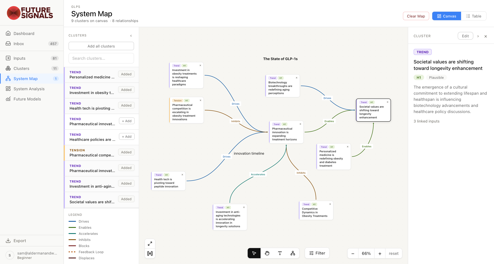

Future Signals gives you a place to hold the raw material of change: signals, questions, ideas in progress, and add it up into clearer understanding, focused imagination, and better strategic choices.
Request access
Saved posts, open tabs, screenshots, articles, transcripts, field notes, stray questions, last quarter's Miro board. The raw material of your practice sits scattered across tools built for something else.
A cluster is forming. You can feel how the pieces connect. A possible future is taking shape, but it's hard to leave and return.
Weeks of scanning and synthesis compress into three bullets for an executive audience, and the reasoning behind them disappears.
Future Signals gives your thinking a home: a structure that holds your observations, shows your work, and helps you add it all up into what it means.
Build a base of evidence for your explorations. Add signals, sources, plans, examples, issues. A signal scanner can find signals, and the Chrome extension lets you save what you find while browsing.
Signals gain meaning in combination. Name the trends, drivers, tensions, and uncertainties in your evidence. The tool can suggest groupings that reveal patterns you have not yet seen.
Patterns interact. Map how the clustered forces drive, inhibit, reinforce, and accelerate one another and the behavior of the system becomes easier to see.
Interrogate the structure. Find the forces that hold the system in place and the tensions that could reshape it.
Build scenarios, preferred futures, and strategic options that bring foresight to life and inform decisions.
Start anywhere. Move in any direction.
Each stage gives your thinking a frame. Explore it. Sharpen it. Ask what it could mean.
Scenarios trace back through the patterns and signals that produced it. When someone asks how you got there, you can show them.
One sharp question is enough to start. As the work matures, the structure is there to hold it.
Future Signals uses your project question, saved signals, and working context to suggest relevant signals, clusters, and patterns. Every suggestion waits for you to confirm it, edit it, or promote it before it becomes part of your project. The thinking is yours.
Your project materials stay inside your account and are not used to train public models. If you are working with sensitive client material, treat Future Signals as you would any research system: use appropriate judgment about what you upload, who has access, and what belongs in the project record.
No. Future Signals gives you structure, not doctrine. The workflow has a shape, but the work can stay flexible. You can follow the stages in order, or use the parts that help as your inquiry develops.
Those tools can hold material. Future Signals carries the reasoning for why they are there together. Signals connect to clusters. Clusters connect to maps. Maps connect to scenarios. Scenarios connect to implications and strategic options.
Every project exports as structured Markdown: inputs, clusters, the system map, analysis, and future models. Shape it into your own decks, reports, and briefings. We're currently working on more presentation-friendly export formats.
Future Signals is still being shaped with a small group of early users. Some parts will change as we learn, and some edges may be rough. You’ll have a direct line to us as we build, and a real voice in what comes next.
Workspaces are single-user today. Collaboration is on the roadmap; tell us how your team works and you'll help us build it right.
Future Signals is currently being shaped with a small group of foresight practitioners and other people curious about what's next. If you want a hand in shaping it, tell us a little about your work.
We welcome your collaboration.